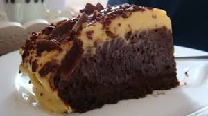

Dark Chocolate Cake

Use your air fryer to make this yummy mini dark chocolate cake topped with brown butter frosting.
Brown butter frosting needs to be used immediately after preparation.
By Coweed
Ingredients
Mini Dark Chocolate Cake
cooking spray
1/4 cup flour, plus more for dusting cake pan
3 tablespoons unsweetened Dutch process cocoa powder
1/2 teaspoon baking powder
1/4 teaspoon baking soda
1/4 teaspoon salt
3 tablespoons low-fat buttermilk
3 tablespoons unsweetened applesauce
4 1/2 teaspoons canola oil
1 teaspooninstant espresso coffee powder
1/2 teaspoon vanilla extract
1 large egg
1/2 cup sugar
1 ounce dark chocolate, chopped, plus more for garnish
Butter Frosting
5 tablespoons butter
2 tablespoons honey
1/2 teaspoon vanilla extract
3/4 cup powdered sugar
2 teaspoons water, or as needed
Directions
- Preheat air fryer to 320 degrees F (160 degrees C). Coat a 6-inch cake pan with cooking spray.
Line bottom of pan with parchment paper; dust with 2 tablespoons flour, tapping out excess.
- Stir together 1/4 cup flour, the cocoa, baking powder, baking soda, and salt in a small bowl.
In another small bowl, whisk together buttermilk, applesauce, oil, espresso powder, and vanilla.
- In a third bowl, beat egg with an electric mixer at low speed. Gradually add sugar. Increase mixer
speed to high and continue beating until mixture is thick and pale, about 2 minutes.
- Alternately fold flour mixture and buttermilk mixture into egg mixture with a rubber spatula,
stirring until incorporated before adding next addition. Fold in dark chocolate.
- Pour batter into the prepared pan. Arrange pan in the air fryer basket.
- Cook until a toothpick inserted in center comes out clean, about 25 minutes. Let cool in pan on
a wire rack about 10 minutes. Remove cake from pan and allow to cool completely on a wire rack.
- For the frosting, melt butter in a heavy saucepan over medium heat; cook, stirring occasionally,
until butter begins to turn golden brown and smells nutty, 15 to 20 minutes. Transfer butter to a bowl; cool for 10 minutes.
- Whisk in honey and vanilla. Whisk in powdered sugar until smooth, adding water, 1 teaspoon at a time,
until desired consistency. The frosting will look separated but will come together with whisking in water
a little at a time.
- Immediately top cooled cake with the frosting and garnish with additional dark chocolate.